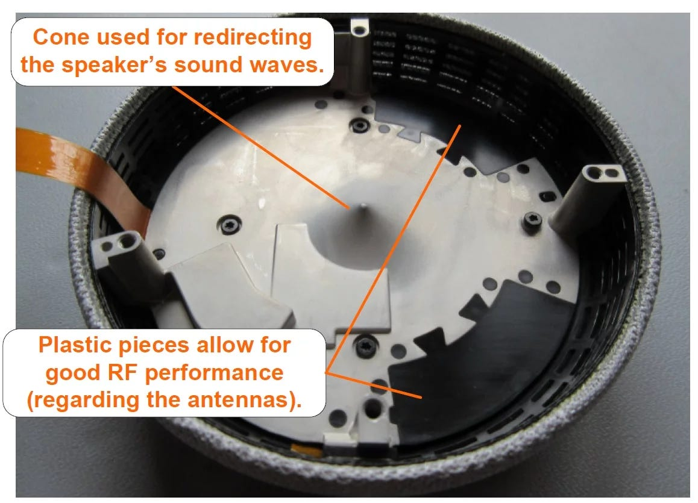
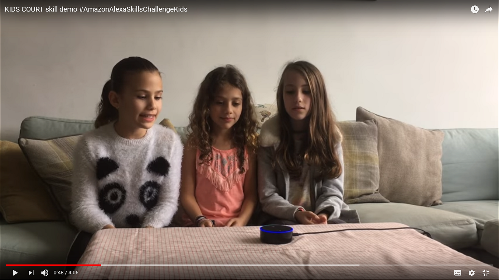
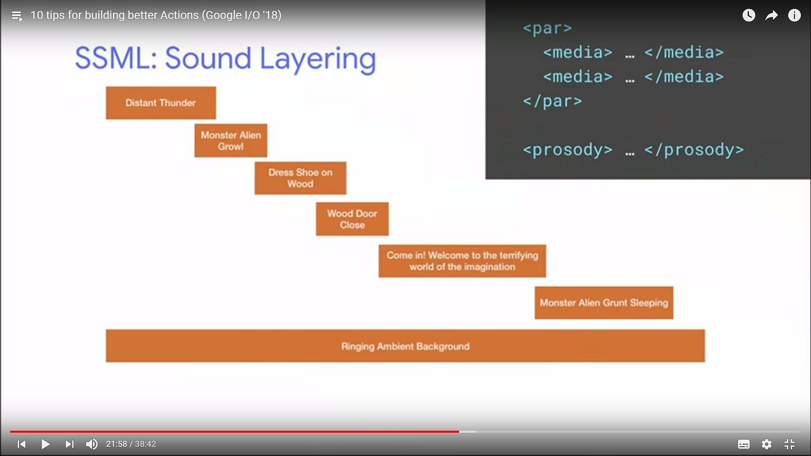
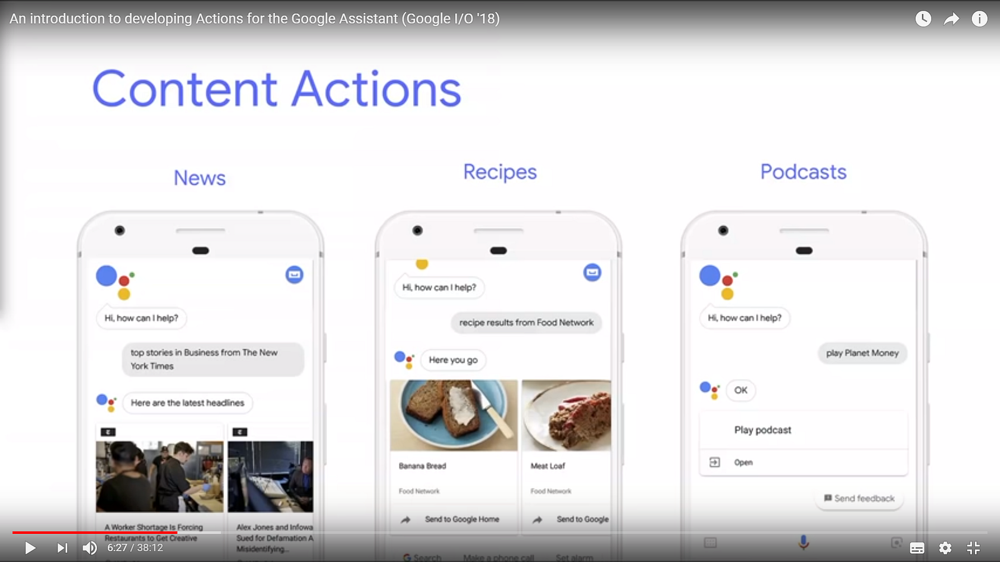
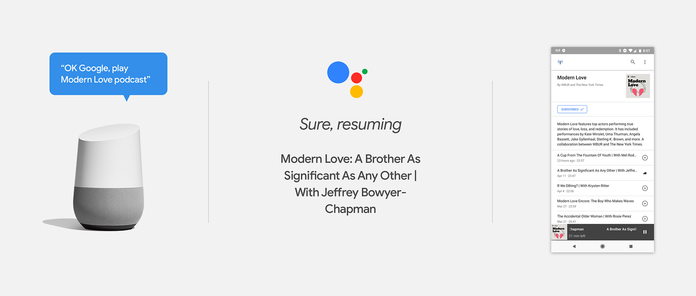
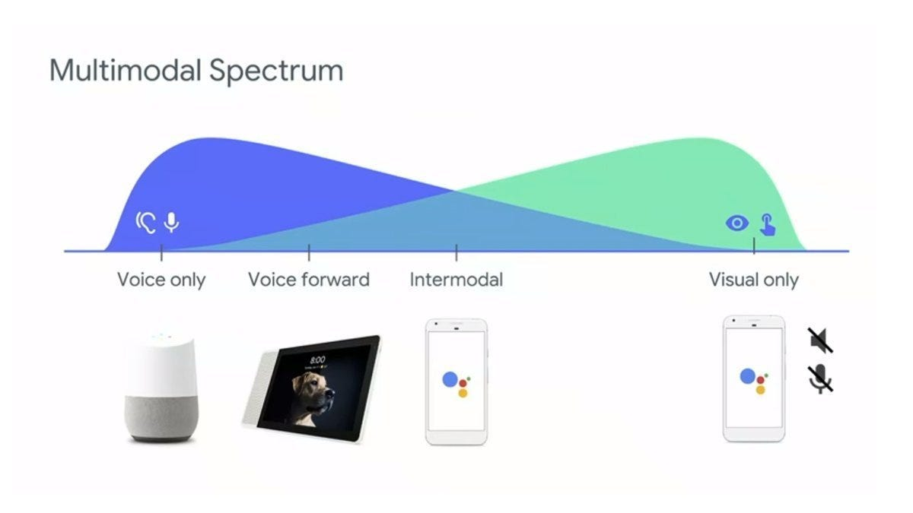
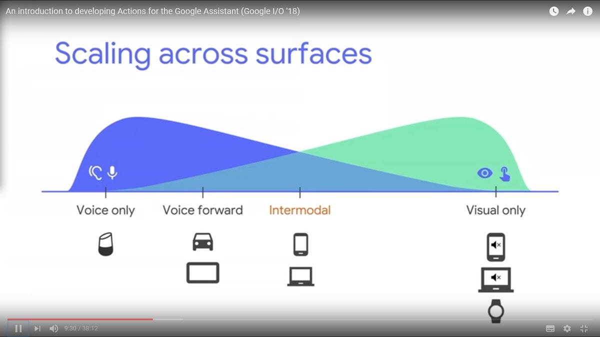
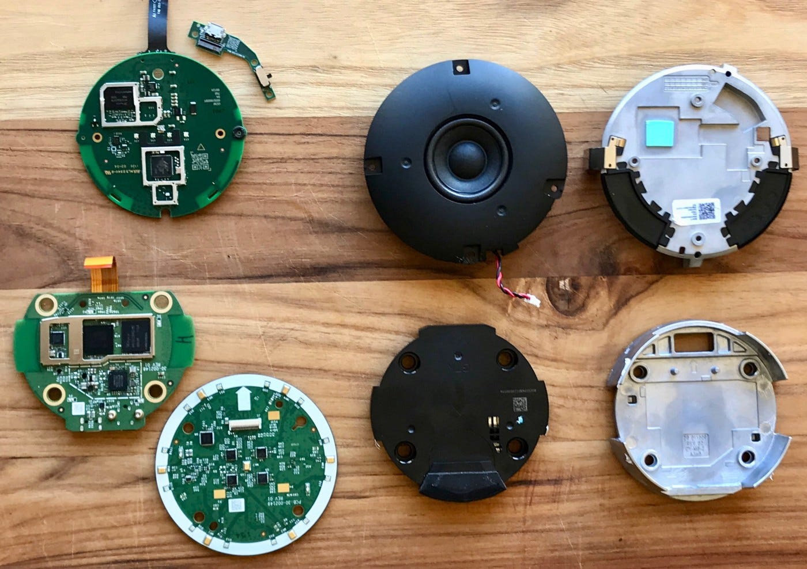

Echo Dot ed Home Mini: Audio confronto
Un’introduzione allo sviluppo di applicazioni audio su Amazon Alexa e Google Assistant

01–11–2018 — Warning: questo articolo compara alcune caratteristiche audio di Google Home mini e Amazon Echo Dot di seconda generazione (vedi fotografia). Dal 30 ottobre 2018 è in vendita in Italia l’Echo Dot di terza generazione, che ha caratteristiche audio completamente rinnovate rispetto al modello di precedente generazione.
24–10-2018 — Update: interessante articolo di comparazione tra Google Home mini e Amazon Echo Dot di terza generazione: Amazon’s new Echo Dot vs. the Google Home Mini: Which sounds better?
Non vi propongo il solito articolo di comparazione all'americana di un Amazon Dot e un Google Home Mini. Su Youtube trovate centinaia di video-confronti sulle feature base e sui vari tricks di domotica.
Qui vorrei invece fare alcune considerazioni sui diversi approcci di Amazon e Google nello sviluppo di applicazioni vocali su smart-speakers. Accenno solo alle caratteristiche hardware/audio dei due dispositivi, spendendo qualche riflessione in più sulle diverse possibilità di sviluppo applicativo con il suono.
Le due aziende che ora detengono il duopolio degli assistenti vocali hanno forse una differente concezione di cosa sarà l’esperienza utente con un’applicazione vocale, anzi, per meglio dire, “sonica”. Ne accennerò.
Sound User Experience
Con questa dizione intendo un’esperienza utente (di un’applicazione conversazionale su smartspeaker) che non sia un’applicazione VUI (Vocal User Interface) derivante dal semplice porting di un’applicazione testuale chatbot o di un odiatissimo risponditore vocale automatico IVR (Interactive Voice Responder).
No. In una UX sonica i contenuti verbali (“voce” come trasposizione di una informazione testuale) sono arricchiti da informazioni di suono di svariato tipo: la voce umana nei suoni non verbali, la musica, soundtracks, i rumori di ambiente, le earcon (icone audio), jingle, audio-clips, podcasts, registrazioni audio e suoni di ogni tipo.
Gli smart-speaker hi-fi permettono esperienze soniche immersive, oltre il concetto archetipico di interfacce vocali.
Audio-confrontiamo i dispositivi hardware
Ma ripartiamo da un hardware-confronto tra i due piccoli smartspeaker “combo”.
Google Home Mini
Sul dispositivo ho già scritto in mio precedente articolo: L’umorismo del sasso parlante di Google. La qualità audio del “sasso parlante” è a mio avviso più che eccellente.

Potenza sonora abbondante e completamente soddisfacente in una stanza di dimensioni standard. Ma quello che mi piace particolarmente è l’equilibrio di equalizzazione in frequenza, con bassi generosi, insomma definirei Google Home Mini un oggetto di ascolto Hi-Fi!
Lo uso per esempio per ascoltare musica in camera da letto:
Hei Google, suona la playlist spotify: Jazz for Sleep
Quella della “ninna nanna musicale” in audio-diffusione, è un’esperienza che non conoscevo prima, e devo dire che è molto piacevole!
E se si desidera una potenza di suono maggiore, è possibile bluetooth-accoppiare il sasso con bluetooth speaker esterno.
Amazon Echo Dot
A confronto con il Mini, Il Dot risulta perdente rispetto alle capacità audio, sia in termini di potenza sonora, sia in termini di equalizzazione audio, di “pasta del suono”. L’esperienza qui è paragonabile a quella dell’ascolto di una radiolina da tavolo.
Per contro è disponibile un mini-jack audio (stereo) per cui è possibile ridirigere l’audio via cavo su delle casse amplificate. Ottima opzione oltre a quella via bluetooth.
Evito qui un confronto sulla “pasta” della voce sintetica (in lingua italiana) di default di Alexa e Google Assistant, perché il Google Home Mini, acquistato su Google Store, è quello in lingua italiana, mentre L’Amazon Echo Dot , regalatomi da Amazon, è configurato sulla lingua Inglese. Non è possibile quindi fare un confronto alla pari. Per impressioni sul tono di voce di Google Home, ho già scritto qui e Giuditta Del Buono ha scritto qui.
Come possiamo indovinare facilmente dalle comunicazioni ufficiali e voci di corridoio, Amazon Alexa verrà probabilmente rilasciato in lingua italiana, tra non molti mesi. Questa è la mia personale previsione e non c’è una specifica comunicazione ufficiale da parte di Amazon, ma … credetemi!
Smartspeaker non é solo Voice User Interface
Uno dei probabili successi delle applicazioni vocali per smartspeaker è relativo alle possibilità soniche a completamento di un’interfaccia bot vocale (speech-to-text e text-to-speech).
Un settore innovativo è quello delle applicazioni soniche che integrano software vocali dialoganti con contenuti audio pre-registrati.
Ma proviamo subito ad elencare qualche tipologia di nuove applicazioni possibili con gli smartspeaker.
Giochi ed intrattenimento
Certamente un settore in rapidissima espansione sugli Alexa skills è quello dell‘entertainment, in particolare i giochi sociali, per i bambini e la famiglia.
Ci sono esempi di giochi per bambini davvero fantastici come Kids Court, di Adva Levin. In questo gioco i bambini sottopongono un “reato” ad un giudice virtuale che ascoltati i pareri del bimbo accusato ed il suo accusatore, assolve o condanna, infliggendo pene giocose ed insegnando alcuni principi legislativi ai bambini.
Giustamente Kids Court ha guadagnato il primo premio della Amazon’s kids competition!

Non è quindi un caso che Amazon abbia lanciato parecchie iniziative nell’ambito dell’intrattenimento per bambini, come Echo Dot Kids Edition e l’iniziativa FreeTime Unlimited.
Musica, podcast, news, la radio, l’audio streaming
Attualmente, l’attività più frequente per gli utilizzatori di Amazon Alexa, sembra essere quella dell’ascolto della musica.
Sia in Alexa che Google Home, l’ascolto di un brano musicale specifico è possibile se l’utente ha attivato una sottoscrizione a pagamento con un aggregatore di contenuti terzo come Spotify, TuneIn, e rispettivamente Amazon Music su Alexa e Google Play Music su Google Home.
Quindi se per esempio ho configurato Google Home associandolo al mio account a pagamento su Spotify, posso richiedere la riproduzione di “Amarsi un po” di Lucio Battisti, su Spotify.
Hei Google, riproduci su Spotify “Amarsi un po” di Lucio Battisti
Inoltre sia in Alexa che Google Home, è possibile ascoltare il live streaming di una radio FM, attraverso collegamento a TuneIn.
La cosa che mi ha lasciato perplesso però, è che attraverso la funzionalità di ascolto di musica o radio, attraverso i colossi aggregatori di contenuti (terze parti) sopracitati, non è possibile avere un’esperienza interattiva / conversazionale sui contenuti (musicali) che si stanno ascoltando.
Verso la radio interattiva?
Immaginate questo scenario: mentre sto ascoltando “Amarsi un po” di Lucio Battisti (attraverso una radio via TuneIn, per esempio), vorrei potere interrompere l’ascolto chiedendo per esempio:
Hei Google, in che anno è stato fatto l'album?
Ok Google, chi c’è alla batteria?
Ok Google, alle chitarre c’è Ivan Graziani?
No, al momento tutto questo, che io chiamo “radio interattiva” (ne ho parlato in mio talk, a partire da pagina 44 delle slides) non è possibile su Alexa e GoogleHome.
Audio-Skills ed Audio-Actions
Se i metabot non realizzano (ancora) la radio interattiva come funzionalità integrata, è però possibile per gli sviluppatori creare esperienze soniche con uno skill (Alexa) o action (GoogleHome), applicazioni software terze parti.
E’ possibile per esempio realizzare applicazione che riproduca contenuti pre-registrati (audio on-demand ovvero file) e live streaming audio, potendo contemporaneamente gestire delle conversazioni sui contenuti audio in riproduzione in quell’istante. Questo è un nuovo paradigma nella fruizione interattiva di informazioni, contenuti di ogni tipo, ora sì davvero “conversazionale”!
Radio Interattiva? E’ interrompere l’ascolto di un notiziario ins streaming e chiedere ulteriori info ad un “listening assistant” su argomenti/persone citate nel notiziario.
Per realizzare la radio interattiva è necessario poter riprodurre dei file audio, ed anche uno streaming audio. Servono dei metadati associati, un sistema di sincronizzazione e un’intelligenza conversazionale vocale (che io chiamo listening assistant) per la gestione delle queries dell’utente.
La realizzazione di un bot conversazionale che permetta dialoghi sui contenuti dei metadati associati ad uno streaming audio … è fuori dallo scope di questo articolo!
Google si sta muovendo proprio in questa direzione, con una nuova strategia sui podcast, di cui vi parlo nel prossimo paragrafo, ma proviamo prima ad elencare quali sono le armi in possesso ai programmatori che vogliano creare contenuti complessi comprensivi di audio sulle due piattaforme in esame.
Riproduzione di brevi audio clips via SSML
SSML è lo standard usato da Amazon e Google per il controllo della prosodia dello speech sintetico. Ma il linguaggio è anche usato per la riproduzione di brevi contenuti audio (appunto con il tag <audio>).
Nell’esempio qui sotto è visualizzato un messaggio di testo preceduto da un breve earcon, ovvero una clip audio di breve durata:
// This is the initial welcome message
var welcomeMessage = "<audio src=’https://s3.amazonaws.com/ask-soundlibrary/musical/amzn_sfx_trumpet_bugle_03.mp3'/>Welcome to the Easter Bunny Egg Hiding Game. I will ask you multiple questions that you should answer yes or no. Based on your choices, I will make a recommendation on where to hide an egg. Are you ready to begin?";
this.emit(':ask', welcomeMessage, repeatWelcomeMessage);
L’SSML va bene per la riproduzione di segmenti audio brevi.
Nel caso di Alexa c’è infatti una limitazione della lunghezza della clip a 90 secondi, mentre nel caso di Google Home la limitazione è di 120 secondi.
Qui sotto alcuni articoli su SSML, secondo Google ed Amazon.
GoogleHome
Invito alla lettura dei due articolo introduttivi: SSML for Actions on Google e Advanced SSML for Actions on Google di Leon Nicholls e More SSML for Actions on Google! dell’italiano Silvano Luciani.
Il “dialetto” SSML di Google permette alcune feature molto interessanti come il “Sound Layering” di segmenti audio che possono essere in parallelo od in sequenza come nell’esempio della figura qui sotto, dove la traccia Distant Thunder viene eseguita in parallelo (tag: <par>) con la traccia Ringing Ambient Background:

Alexa
Le direttive SSML sono molto simili a quelle Google (in verità un sottoinsieme). Rimando al documento Speech Synthesis Markup Language (SSML) Reference per i dettagli. Vedi anche l’articolo introduttivo:
Librerie di effetti sonori
Entrambe le piattaforme mettono a disposizione librerie di “sound effect” adatti a giochi:
- GoogleHome: Sound Library.
- Alexa: Alexa Skills Kit Sound Library.
Le librerie sopra sono solo la punta di un iceberg di un mercato che potrebbe essere molto promettente: la produzione di clip audio, musica per giochi e l’audio produzione!
Play di file audio e live-streaming
Su Alexa: L’ASK permette una discreta libertà di programmazione con l’audio, attraverso le funzionalità AudioPlayer. Si veda l’articolo introduttivo di Dave Isbitski: New Alexa Skills Kit (ASK) Feature: Audio Streaming in Alexa Skills.
Con l’AudioPlayer è possibile fare il play, in uno skill, sia di file audio MP3, sia di streaming HTTP. Su github sono disponibili due progetti che dimostrano l’uso di Alexa Audio Player per la realizzazione degli skills:
- Il folder Multiple-streams contiene un esempio di skill per riprodurre un insieme di streams audio preregistrati (podcasts).
- Il folder Single-stream contiene un esempio di skill per la riproduzione di un singolo stream, come per esempio una live radio.
Per maggiori info: AudioPlayer interface e PlaybackController interface.
Quello che mi piace dell’approccio Alexa è che vengono gestiti allo stesso modo file audio e lo streaming audio.
Su GoogleHome: Claudio Cherubino (un altro Googler Italiano!) mi fa notare che il play di contenuti audio di lunghezza superiore ai 120 secondi (con l’SSML) è possibile attraverso le Media Responses!
Al momento non mi risulta che sia possibile fare, all’interno di una action,il play di audio streaming su GoogleHome. Cosa invece possibile su Alexa.
Google Search per i contenuti podcast
Google definisce podcast un programma audio consistente in uno o più episodi.
Affinché un podcast appaia nei risultati di una query Google Search, con una descrizione di ogni episodio ed un player embedded, è necessario esporre un feed RSS valido con almeno un episodio, una home page dedicata al podcast, contenente un link al feed RSS. Tutti i dettagli qui.
Google può creare Action automatiche per l’interazione con i contenuti di un podcast publisher, con una corrispondente pagina auto-generata nella directory di Assistant. Dettagli qui.

Interoperabilità tra dispositivi (nello spettro multimodale) ?
E’ ora possibile ascoltare podcasts con Google Assistant. Dicendo:
OK Google, play the Modern Love podcast.
Questo funziona sia con Google Home che con i dispositivi Android.

Ricerca di informazioni all’interno di un podcast!
Zack Reneau-Wedeen, Google Podcasts Product Manager, afferma che in futuro i podcast metadata permetteranno a singoli episodi podcast di apparire nei risultai di una ricerca con Google search. Un podcast si attiverà non solo quando una persona lo cerca in modo specifico (funzionalità già disponibile su Android), ma anche quando una persona cerca argomenti o persone inclusi nel podcast stesso.
La strategia di Google sul podcasting e l’integrazione con Google Search è spiegata in dettaglio negli articoli:
Inside The New Google Podcasts Strategy
Conclusioni
Il confronto sull'hardware, perlomeno rispetto ai due dispositivi utilizzati vede vincitore Google Home Mini; come speaker, questo “suona” meglio dell’Amazon Echo Dot. Non ce n’è. Con scherzosa equazione “trad” direi che:
Echo (Dot) : PC = Google Home (Mini) : Apple Macintosh
Ma sulle possibilità di sviluppo applicativo, vedo al momento l’approccio Alexa come più aperto, per il fatto che, malgrado alcuni limiti degli strumenti di sviluppo software che Amazon propone (di cui magari parlerò in successivo articolo), le funzionalità dell’Amazon Skill Kit permettono di realizzare applicazioni audio che possono comprendere sia live-streaming audio sia audio on-demand (segmenti audio di lunghezza qualsivoglia), ovvero podcast.
Alexa Skill Kit vince nel supporto alla sperimentazione!
Le primitive di programmazione audio di ASK sono relativamente semplici e danno allo sviluppatore potenzialità creative senza vincolare a paradigmi predeterminati. Questo spiega il recente emergere delle applicazioni vocali nell’ambito dei giochi e dell’intrattenimento.
Tante superfici per una stessa applicazione?
Estendendo il discorso non solo all’audio, dal punto di vista della strategia e della visione di cosa sarà nei prossimi anni un’applicazione conversazionale, ci sono due approcci forse differenti tra Amazon e Google. E non è facile fare previsioni.
La visione di Google mi appare piuttosto chiara dopo aver ascoltato un po’ di talk all’evento #io18 appena concluso. Tale visione è forse riassunta nel diagrammino della slide qui sotto riportata.
Un’applicazione Google Assistant deve funzionare nell’intero “spettro multimodale” dei dispositivi possibili, le “superfici” (così Google chiama la UI su una determinata tipologia di dispositivo):
- Voice only, ovvero su un dispositivo smartspeaker Google Home.
- Voice forward, ovvero quello che Brian Roemmele chiamerebbe voicefirst (sembra che quest’estate Google rilascerà un dispositivo smartspeaker con interfaccia visuale/forse touchscreen, qualcosa di paragonabile ad un Amazon Echo Show).
- Intermodal — immagino che si intenda la app mobile Google Assistant, in cui l’interazione può avvenire con controllo vocale oppure attraverso interfaccia visuale/touch, standard di una app Android.
- Visual only — si intende la app Google Assistant (e le App Actions per qualsiasi altra mobile app compliant al nuovo standard), dove non c’è interfaccia vocale, ma solo quella visuale di una app mobile consueta.


In tutto questo, in relazione alle applicazioni audio, un ruolo importante lo gioca il progetto di Zack Reneau-Wedeen sui podcast, esempio perfetto di ambito applicativo (sonico) cross-superficie.
E Amazon?
Alexa al momento sta puntando tutto sul cosiddetto voicefirst (o voice only in riferimento al diagramma sopra): l’esperienza utente avviene anzitutto attraverso un’interazione vocale, con i dispositivi smartspeaker Amazon Echo ed Echo Dot, che possono, secondariamente, avere un’interfaccia visuale opzionale con i dispositivi Echo Show ed Echo Spot (ed altri che sicuramente ci verranno presto proposti).
Amazon non ha Android, cioè il sistema operativo di Google contenuto nel ~70% dei telefoni mobili della popolazione mondiale. Amazon non ha nemmeno su smartphone una app equivalente a Google Assistant, anche se Alexa sarà presto disponibile come app con un funzionamento analogo a Google Assistant.
Last but not least, a qualche giorno di distanza dal mega evento #io18, c’è stato il non trascurabile evento #MSBuild di Microsoft, dove è stata annunciata tra tante altre news, l’integrazione di Cortana e Alexa.
Questo annuncio è importante perché introduce un settore applicativo nuovo per le applicazioni conversazionali ed audio, cioè quello delle applicazioni interaziendali voicefirst. Un settore importantissimo è quello dell’office automation (si pensi alle funzionalità di Alexa for Business, arricchite dalla integrazione con Office365). Ne parlerò prossimamente.
Insomma nel Duopolio Google/Amazon, Microsoft si allea con il secondo e la sfida diventa più bilanciata forse. Ne vedremo delle belle! Stay tuned.
